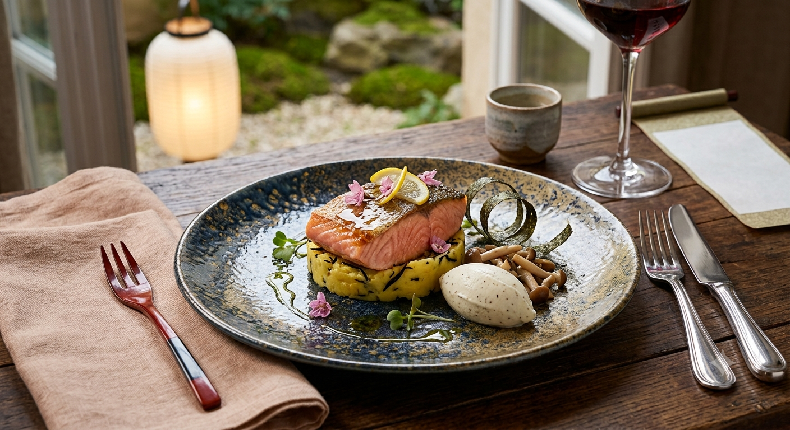
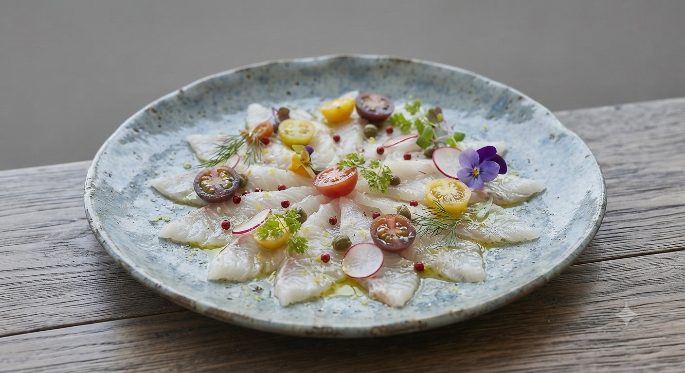

山形の旬を、
フレンチの気品と
和の心で。
山形駅からわずか三キロ。住宅街の喧噪を抜けた先に現れる、わずか数組のための空間。 私たちが大切にしているのは、素材が持つ「声」を聞くこと。山形の豊かな土壌で育まれた野菜、 日本海の荒波に揉まれた鮮魚。それらをフレンチの技法で磨き上げ、お箸で召し上がる和のスタイルでご提供いたします。
RESTAURANT LA BERGE


箸で綴る、山形の記憶。
RESTAURANT LA BERGE
完全予約制・山形の隠れ家レストラン
山形駅からわずか三キロ。住宅街の喧噪を抜けた先に現れる、わずか数組のための空間。 私たちが大切にしているのは、素材が持つ「声」を聞くこと。山形の豊かな土壌で育まれた野菜、 日本海の荒波に揉まれた鮮魚。それらをフレンチの技法で磨き上げ、お箸で召し上がる和のスタイルでご提供いたします。
RESTAURANT LA BERGE
当店のシグネチャー。山形の海が育んだ真鯛の繊細な旨みと、海老の濃厚な甘みが、 特製ソースによって一つの物語へと昇華されます。彩り豊かな盛り付けは、まるで一幅の絵画のよう。
乾杯のスパークリングを添えて
WEBまたは当サイトをご覧の上お電話でご予約の方に、爽やかな乾杯の一杯をプレゼントいたします。

堅苦しいマナーは不要です。日本人に馴染み深いお箸で、最後の一口までゆったりとお愉しみください。
四季がはっきりとした山形だからこそ出会える、その時々で最も輝く食材を厳選して仕入れています。
住宅街に紛れた「分かりづらさ」こそが贅沢。大切な方との記念日や、親しい方との会食に最適です。
ラ・ベルジュがこれからお届けする、新しい体験と感動の計画です。
フランス料理の腕に、山形が誇る銘酒の数々、そして選りすぐりのワインを。お料理の一皿一皿に合わせて、日本酒とワインをクロスオーバーさせる特別なペアリングコースを開発中です。
「今、一番美味しい瞬間」を逃さないために。その日仕入れたばかりの旬の食材やシェフが考案する限定の季節メニューを、Instagramなど各種SNSにてライブ感たっぷりに写真と動画でお届けします。
「お料理も見た目も美しく、とても美味しくいただきました。奥様のサービスも細やかで、お食事はお代わり出来ました。仲の良い女子会でもお祝いにも、また伺いたいお店です。」
「職場の送別会でした。感じの良い接客に、お箸で食べる美味しい和洋料理。ゆっくりと食事を楽しむことが出来るお店でした。」